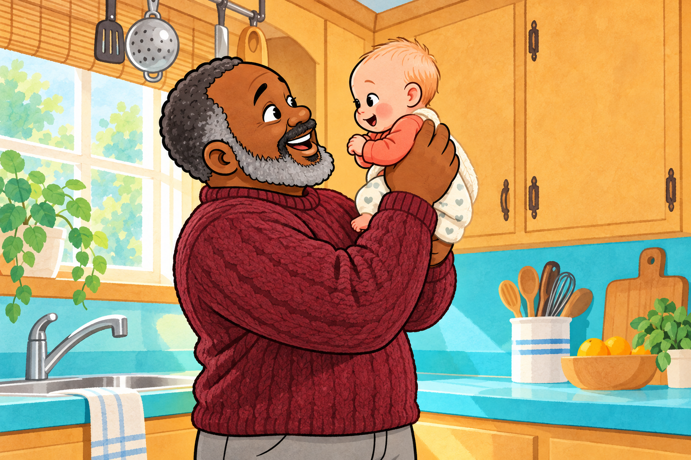
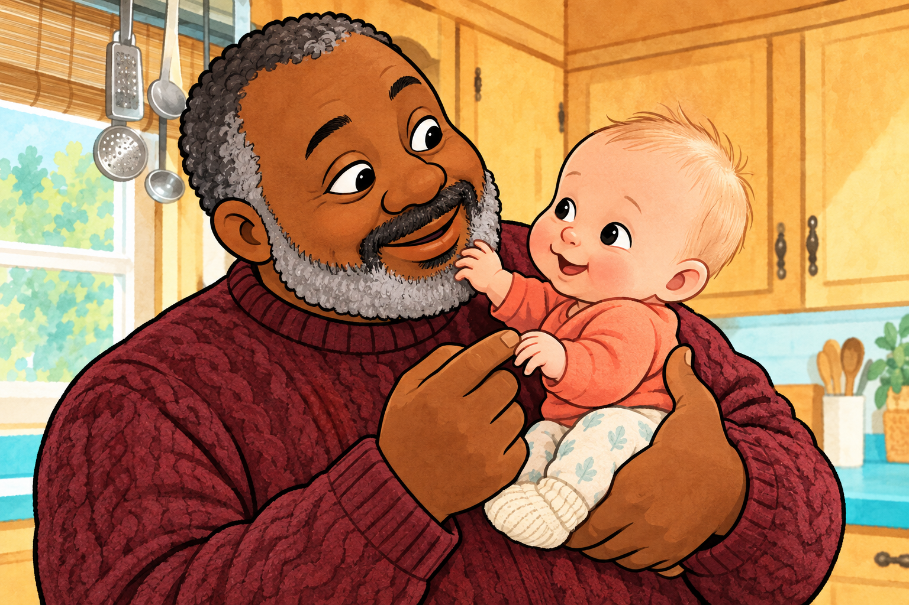
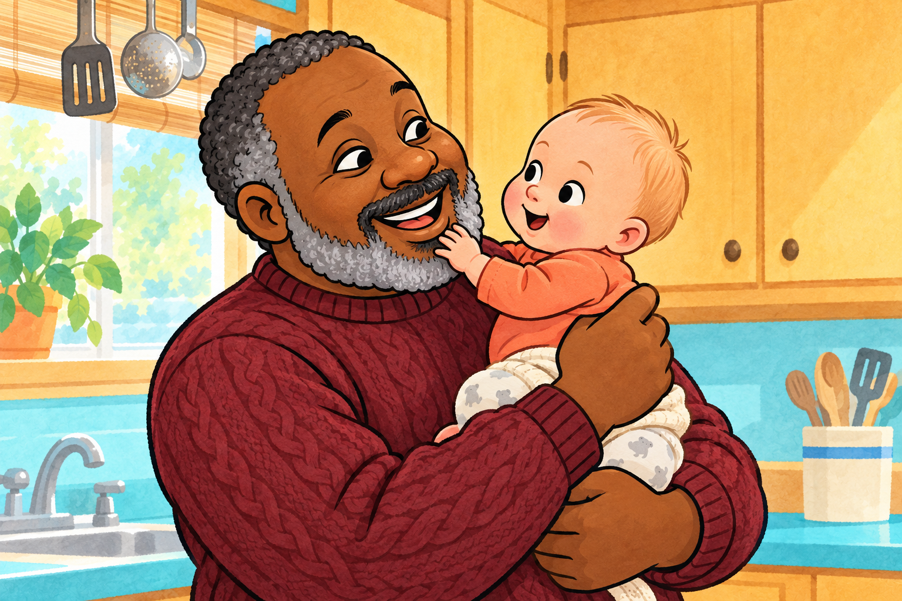
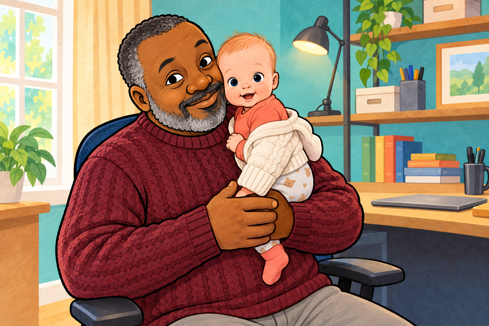

Grumpy Finds a Baby
A true little tale about the day Grumpy and Arlo found each other.
 The illustration could not be loaded.
The illustration could not be loaded.Expected: images/01-a-tiny-sound.png
A Tiny Sound
Grumpy heard cooing, so gentle and low.
“What makes such a sound? I just have to know!”
He followed the squeak, and what did he see?
A baby as small as a baby could be!

The illustration could not be loaded.Expected: images/02-careful-hands.png
Careful Hands
He tucked one big hand beneath the small head,
and lifted the bundle in cream, gray, and red.
The baby looked up. Grumpy started to grin.
“Well, look what I found—let our story begin!”

The illustration could not be loaded.Expected: images/03-ten-tiny-fingers.png
Ten Tiny Fingers
He counted ten fingers and toes, every one.
Then Arlo stared back as if Grumpy were fun.
He reached for the whiskers that grew on his chin.
Grumpy held still with a ticklish grin.

The illustration could not be loaded.Expected: images/04-a-closer-look.png
A Closer Look
Arlo looked left. Then he looked right.
He studied his Grumpy with all of his might.
A nose, two eyebrows, a soft beard below—
“That’s everything, baby. Now you know!”

The illustration could not be loaded.Expected: images/05-first-pictures.png
The First Pictures
The camera went click! What a picture to see:
A baby with Grumpy, as snug as could be.
They took one, then two, then a few more that day,
while Arlo kept finding new reasons to stay.
 The illustration could not be loaded.
The illustration could not be loaded.Expected: images/06-found-each-other.png
Found Each Other
Grumpy found a baby—or so the tale goes—
with ten tiny fingers and ten tiny toes.
But safe in those arms, Arlo knew from the start:
He had found his Grumpy—and Grumpy’s whole heart.